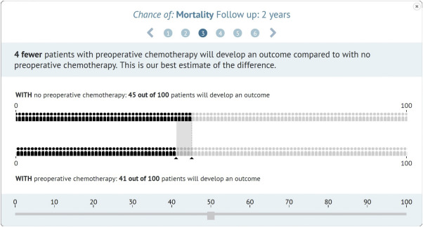
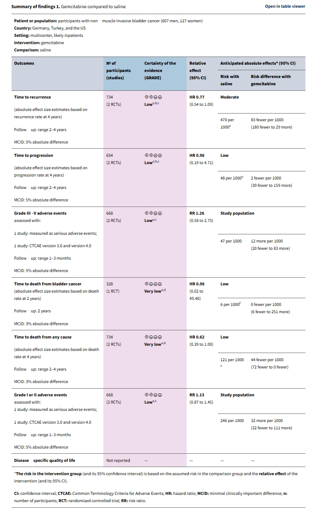
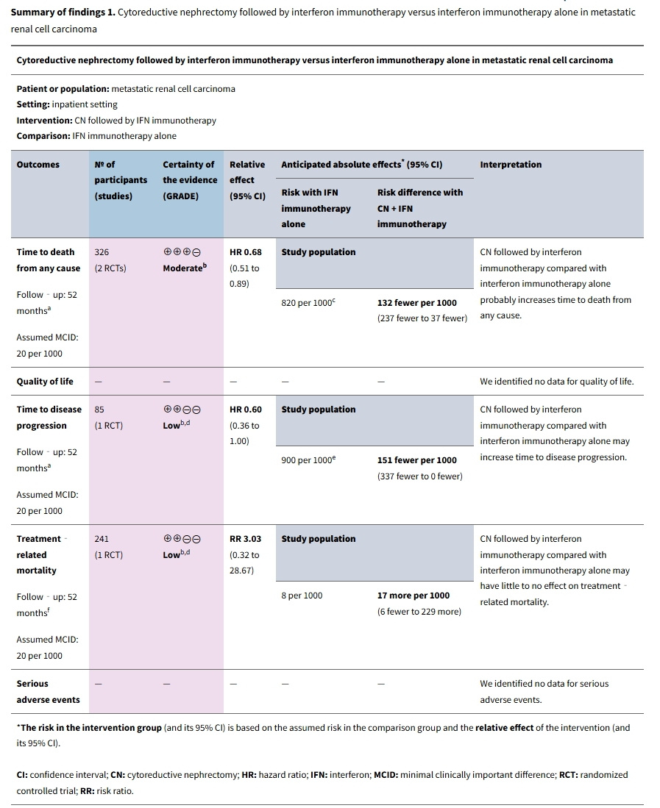
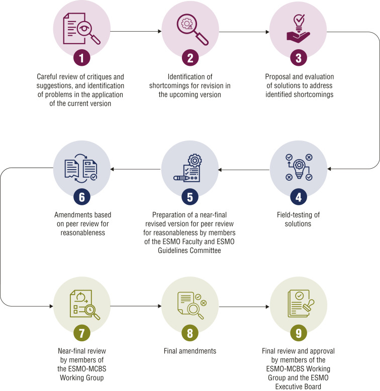
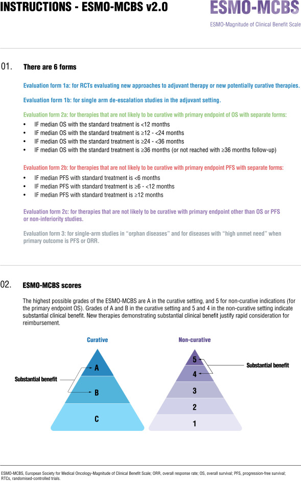
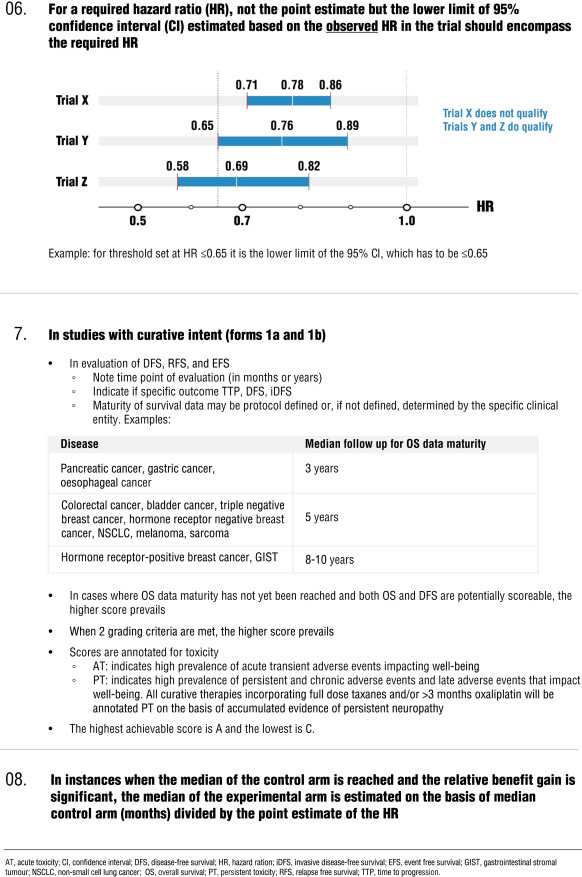

time-to-event outcomesと閾値について
HRを絶対効果差と臨床的重要閾値へ翻訳するGRADE実務講義
まず、HR 0.80は「生存が20%増えた」ではない
Time-to-event outcomeでは、効果指標としてハザード比がよく使われます。しかしHRは、ある時点のリスク比や生存割合の比ではなく、追跡中の瞬間的なイベント発生率の比です。したがって、SoF表やEtDで意思決定に使うときは、患者やパネルが理解しやすい「何年時点で1000人あたり何人少ない、または多い」という絶対効果差に直して読む必要があります。
時点を固定する
1年、2年、3年など、臨床判断に使う時点を先に決めます。時点が変われば絶対効果もNNTも変わります。
baseline riskを決める
対照群のKaplan-Meier曲線、代表的研究、レジストリ、または対象集団に近い予後情報から、その時点のイベントリスクを置きます。
閾値と比較する
算出した絶対効果差と95%CIを、事前に定めた臨床的重要閾値に照らして判断します。
GRADE guidelines 27: HRから絶対効果を計算する
GRADE guidelines 27では、time-to-event outcomeをSoF表に載せるとき、特定時点の対照群リスクまたはイベントフリー割合を使って絶対効果を計算する方法が示されています。

イベントリスクで置く場合
R1(t) = 1 - {1 - R0(t)}^HR
R0(t)は対照群の時点tにおけるイベントリスク、R1(t)は介入群のイベントリスクです。
イベントフリー割合で置く場合
S1(t) = {S0(t)}^HR
S0(t)は対照群のイベントフリー割合、S1(t)は介入群のイベントフリー割合です。
| 対照群イベントリスク | HR 0.80の介入群イベントリスク | 絶対効果差 | 読み方 |
|---|---|---|---|
| 10% | 8.1% | 19/1000少ない | 低リスク集団では同じHRでも絶対差は小さい。 |
| 20% | 16.3% | 37/1000少ない | baseline riskが上がるほど絶対差も大きくなる。 |
| 40% | 33.5% | 65/1000少ない | HR 0.80でも臨床的に意味がある可能性が出る。 |
| 60% | 50.8% | 92/1000少ない | 高リスク集団では絶対利益が大きく見える。 |
実務手順: SoF表へ落とし込む前にそろえるもの
アウトカムを患者が想像できる言葉に直す。例: PFSではなく「治療後3年以内に進行または死亡が起きる」。
判断に使う時点tを決める。1年死亡、3年再発、5年DFSなど。
その時点のbaseline riskまたはevent-free率を決める。
HRの点推定値だけでなく95%CI下限・上限も絶対効果差へ変換する。
1000人あたりの差として記述する。
事前に定めた臨床的重要閾値と比較し、不精確性の判断へつなげる。
HRを絶対効果差へ変換してみる
| 入力 | HR | 介入群イベントリスク | イベント差 | イベントフリー差 |
|---|
GRADEの不精確性判断につなげる
GRADEでは、HRの95%CIが1をまたぐかだけでは判断が足りません。大事なのは、絶対効果差の95%CIが「効果なし」「臨床的重要な利益」「臨床的重要な害」のどこをまたぐかです。
| 絶対効果差の95%CI | 解釈 | 不精確性の扱い |
|---|---|---|
| CI全体が臨床的重要利益の閾値を超える | 重要な利益が比較的確からしい。 | 不精確性で下げにくい。 |
| CIが効果なしと重要な利益をまたぐ | 重要な利益があるか不確か。 | ダウングレードを検討。 |
| CIが重要な利益と重要な害の両方を含む | 判断が大きく不確か。 | 強くダウングレードを検討。 |
| CI全体が閾値未満 | 効果はあっても小さい可能性。 | 文脈とアウトカム重要性で判断。 |
Certainty ratingの対象は「何らかの効果があるか」ではなく、「重要な効果があるか」「重要な害があるか」など、あらかじめ決めた閾値に対する判断です。HRのCIではなく、1000人あたり何人の差になるかのCIを見ます。
MIDではなく、事前設定した臨床的重要閾値として扱う
ここでの閾値は、患者報告アウトカムでいうpatient-derived MIDそのものではありません。OS、PFS、DFS、再発、死亡などのtime-to-event outcomeでは、レビューまたはガイドライン作成時に事前設定した絶対効果差の臨床的重要閾値として扱うのが安全です。
患者価値・意向の根拠、アウトカム重要性、治療負担、有害事象、代替治療の有無、パネルの合意過程を明示し、必要なら複数の閾値で感度分析を示します。文中では「prespecified absolute-effect threshold」「clinically important threshold」「事前設定した絶対効果差の臨床的重要閾値」のように書くと誤解が少なくなります。
Guyatt/Zhang系論文からの実務メッセージ
閾値は統計ソフトが自動で出す数字ではなく、患者・パネル・臨床専門家が、価値判断を隠さずに合意する境界線です。
閾値が不確かな場合
1つに固定せず、20/1000、30/1000、50/1000などで結論が変わるかを示すと、推奨の透明性が上がります。
CochraneとASCO/ESMO-MCBSの実例
Cochrane CD009294: 膀胱内ゲムシタビン
非筋層浸潤性膀胱癌に対する膀胱内ゲムシタビンのレビューでは、time to recurrenceやtime to progressionがHRで示され、SoF表では絶対効果差として読めます。たとえば対照群3年再発リスク40%、HR 0.36なら、介入群リスクは約17%、絶対差は約230/1000の再発減少です。

Cochrane CD013773: 転移性腎細胞癌
転移性腎細胞癌のレビューでは、死亡や疾患進行に関するtime-to-event outcomeで、SoF表の注釈に assumed MCID として20/1000などの閾値が示されることがあります。これは患者報告アウトカムのMIDではなく、このレビューでGRADE判断に用いた絶対効果差の閾値として読みます。

ASCOとESMO-MCBS
ASCOの臨床的に意味のあるアウトカム提案やESMO-MCBSは、HRだけでなく、OS/PFSの絶対的改善、QOL、毒性、tail of curveなどを合わせて読むための補助線です。GRADEでも同様に、HRを絶対効果差と価値判断へ翻訳してから判断します。



論文・ガイドラインでの書き方
方法
Time-to-event outcomeでは、GRADE guidelines 27に従い、事前に定めた時点tの対照群イベントリスクR0(t)から1000人あたりの絶対効果差を算出した。
SoF注釈
対照群の3年イベントリスクを400/1000と仮定し、HR 0.80から介入群イベントリスクは335/1000、絶対差は65/1000少ないと推定した。
閾値
本レビューの閾値はpatient-derived MIDではなく、OS/PFS/DFS/再発に対して事前設定した絶対効果差の臨床的重要閾値である。
不精確性
95%CIが効果なしと臨床的重要利益の両方を含むため、臨床的重要性に関する判断が不確実と考え、不精確性で1段階ダウングレードした。
計算チェック用の期待値
| R0(t) | HR | R1(t) | ARR | 1000人あたり |
|---|---|---|---|---|
| 0.40 | 0.80 | 約0.335 | 約0.065 | 65人少ない/1000 |
| 0.40 | 0.62 | 約0.272 | 約0.128 | 128人少ない/1000 |
| 0.40 | 1.03 | 約0.409 | 約-0.009 | 9人多い/1000 |
| 0.10 | 0.80 | 約0.081 | 約0.019 | 19人少ない/1000 |
参考文献
- GRADE guidelines 27: Skoetz N, Goldkuhle M, van Dalen EC, et al. How to calculate absolute effects for time-to-event outcomes in Summary of Findings tables and Evidence Profiles. J Clin Epidemiol. 2020;118:124-131. DOI
- Cochrane CD009294: Han MA, Maisch P, Jung JH, et al. Intravesical gemcitabine for non-muscle invasive bladder cancer. Cochrane Database Syst Rev. 2021. Evidence summary
- Cochrane CD013773: Cytoreductive nephrectomy in metastatic renal cell carcinoma. Cochrane Database Syst Rev. DOI
- Core GRADE 2: Zeng L, Brignardello-Petersen R, Hultcrantz M, et al. Core GRADE 2: choosing the target of certainty rating and assessing imprecision. BMJ. 2025. DOI
- Time-to-event methods: Tierney JF, Stewart LA, Ghersi D, Burdett S, Sydes MR. Practical methods for incorporating summary time-to-event data into meta-analysis. Trials. 2007;8:16.
- ASCO clinically meaningful outcomes: Ellis LM, Bernstein DS, Voest EE, et al. American Society of Clinical Oncology perspective: raising the bar for clinical trials by defining clinically meaningful outcomes. J Clin Oncol. 2014.
- ESMO-MCBS v2.0: Cherny NI, Oosting SF, Dafni U, et al. ESMO-Magnitude of Clinical Benefit Scale version 2.0. Ann Oncol. 2025;36(8):866-908. DOI